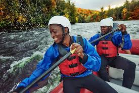
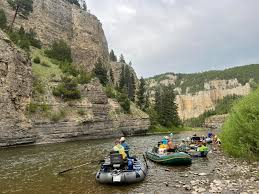
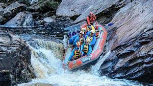

Our Trips | DRY OAR
Have questions? Contact us today!

Beginner Float Trips
Perfect for first-time rafters and families, our Beginner Float Trip offers a relaxing journey through calm waters and beautiful natural scenery. Enjoy a fun, stress-free dventure while learning the basics of rafting under the guidance of our friendly and experienced team.

Half-Day Rapid trips
Our Half-Day Rapids Adventure is ideal for those seeking excitement without committing to a full day perfect balance of adrenaline and outdoor exploration, all guided by our expert rafting team

advanced difficulty trips
Designed for experienced adventurers, our Advanced Difficulty Trips deliver intense rapids, challenging river conditions, and nonstop excitement. Push your skills to the limit while navigating powerful waters under the supervision of expert guides, creating an unforgettable high-adrenaline experience.
| Trip | Difficulty | Duration | Price |
|---|---|---|---|
| Beginner Float | Easy | 2 hours | $50 |
| Half-Day Rapids | Moderate | 4 hours | $90 |
| advanced difficulty trips | Advanced | Full-day | $150 |